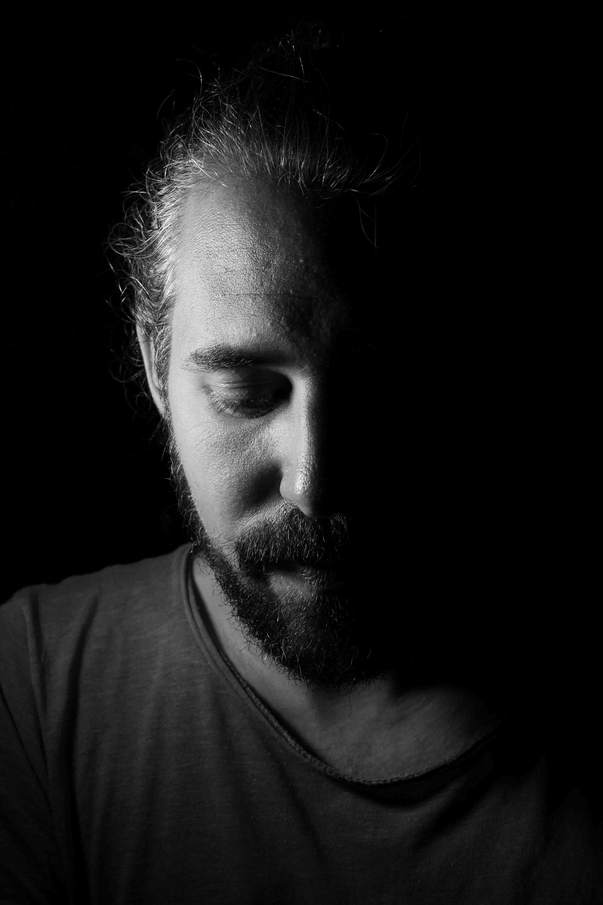

Listen to this page:
José Luis is an environmental scientist investigating the role of community-led initiatives in improving the sustainability of food systems.
"Hopeless"

He likens his feelings about the state of the planet to watching an asteroid hurtling towards us: sometimes he feels nobody else can see it; every day it is a little closer; and we seem to be doing nothing about it.
"Powerless"

His desperation and frustration are clear. “When people find out what I do for work they often say ‘ah, great that you are working to save the planet!’ But I don’t know how to respond, because it doesn’t feel like we are…”
"Resilient"

Despite this, he also feels that researchers need to stay strong in the face of fear and frustration. “Any victory is a huge victory. We work for the public good – we are duty-bound to carry on. We scientists have to work on radical sustainable transformative solutions, and escape from this highly competitive and paper-oriented scientific system that’s disconnected us from reality.”
“I don't have any hope”, he tells me, apologetically, “Considering the scientific knowledge we already have about the topic and our behaviour and lifestyle, I think there’s no place for hope. Many people are already dying, starving or migrating because of the impacts of climate change. The only thing we can do now is to make the problem as least harmful as possible for the planet and people. We have to be resilient.”

Visit the project website